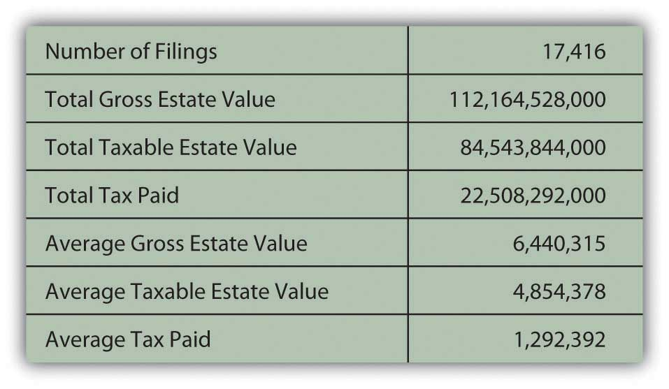

Your estateAll real and personal property of a decedent at the time of death, not including properties in joint ownership or assets that pass directly to a named beneficiary. includes everything you own. Other aspects of financial planning involve creating and managing your assets while you are alive. Estate planning is a way to manage your assets after your death. Age is not really a factor, because death can occur at any time, at any age, by any cause. Arranging for the disposition of your estate is not a morbid concern but a kindness to those you leave behind. Death is a legal and financial event—and in some cases a taxable event—as well as an emotional one. Your loved ones will have to deal with the emotional aftermath of your loss and will appreciate your care in planning for the legal and financial outcomes of your death.
Since you won’t be here, you will need to leave a written document outlining your instructions regarding your estate. That is your willA legal document detailing the disposition of assets upon death., your legal request for the distribution of your estate, that is, assets that remain after your debts have been satisfied. If you die intestateTo die without a valid will, leaving the disposition of assets and debts to the law., or without a will, the laws of your state of legal residence will dictate the distribution of your estate.
You can write your own will so long as you are a legal adult and mentally competent. The document has to be witnessed by two or three people who are not inheriting anything under the terms of the will, and it must be dated and signed and, in some states, notarized. A holographic willA handwritten or oral will. is handwritten; it may be more difficult to validate. A statutory willA will written on a preprinted form. is a preprinted will that you can buy from a store or in a software package. Consider, however, that a will is a legal document. Having yours drawn up by a lawyer may better insure its completeness and validity in court.
ProbateThe legal process of validating a will and overseeing the orderly payment of debts and the distribution of assets. is the legal process of validating a will and administering the payment of debts and the distribution of assets by a probate court. Probate courts also distribute property in the absence of a will. Probate is not required in every case, however. Probate is not required if the deceased
Besides the details of “who gets what,” a will should name an executorThe person named in a will who administers the payments of debts and the distribution of assets, as described in the will., the person or persons who will administer the payment of your debts and the distribution of your remaining assets, according to your wishes as expressed in your will. If you have legal dependents, your will should name a guardian for them. You may also include a “letter of last instruction” stating the location of important documents, safe deposit keys, and bank accounts and specifying your funeral arrangements.
There are several types of wills. A simple willA will leaving all property to a spouse. leaves everything to a spouse. For comparatively small estates that are not taxable (e.g., estates with assets under a million dollars in value), a simple will may be the most appropriate kind. A traditional marital share willA will leaving one-half of the estate to the surviving spouse. leaves one-half of the estate to a spouse and the other half to others, usually children. This may lower any tax burden on your estate and your spouse’s.
A stated dollar amount willA will leaving a specific monetary amount to each beneficiary. allows you to leave specific amounts to beneficiaries. A drawback of this type of will is that the stated amounts may be reasonable when your will is drawn up but may not reflect your intentions at the time of your death, perhaps many years later. For that reason, rather than specifying specific amounts, it may be better to specify percentages of your asset values you would like each beneficiary to have.
You may change or rewrite your will at any time, but you should definitely do so as your life circumstances change, especially with events such as marriage or divorce, the birth of a child, and the acquisition of significant assets, such as a house. If the changes in your circumstances are substantial, you should create a new will.
It is possible that you will become mentally or physically disabled before you die and unable to direct management of your assets. To prepare for this possibility, you may create a living willA document conveying your intentions for your personal care and management of your assets should you become unable to do so before your death. with instructions for your care in that event. You may appoint someone—usually a spouse, child, or sibling—who would have power of attorneyThe legal right to act on your behalf should you become unable to do so before your death., that is, the right to act on your behalf, especially as regards financial and legal decisions. That power may be limited or unlimited (such as a “durable power of attorney”) and is restricted to certain acts or dependent on certain circumstances.
Along with granting power of attorney, your living will may include a health care proxy, requesting that medical personnel follow the instructions of a designated family member who expresses your wishes concerning your end-of-life treatment. Many people request, for example, that they not be revived or sustained if they cannot experience some quality of life. Be sure to update your living will, however, as over time your views may change and as medical and technological advances change our notions of “quality of life.”
A trustA legal entity created to own and manage assets for the benefit of beneficiaries. is a legal entity created by a trustor, or grantor, who owns assets managed by a trustee or trustees for the benefit of a beneficiary or beneficiaries. A testamentary trustA trust created by a will that becomes effective upon the death of the grantor. may be established by a will so that beneficiaries who are unable to manage assets (minor children or disabled dependents) can benefit from the assets but have them managed for them. A living trustA trust created while the grantor is alive. is established while the grantor is alive. Unlike a will, it does not become a matter of public record upon your death. A revocable living trustA trust created while the grantor is living that may be revoked or changed by the grantor; therefore, ownership of the grantor’s assets remains under the control of the grantor. can be revoked by the grantor, who remains the owner of the assets, at any time. Such a trust avoids the probate process but may not shield assets from estate taxes. An irrevocable living trustA trust created while the grantor is living, that may not be revoked or changed by the grantor. The trust is considered a legal entity, and ownership of the grantor’s assets is transferred to the trust. cannot be changed; the grantor gives up ownership of his or her assets, which passes to the trust, avoiding probate and estate taxes. However, the trust then becomes a separate taxable entity and pays tax on its accumulated income.
Another way to avoid probate and estate taxes is to gift assets to your beneficiaries while you are alive. Ownership of the assets passes to the beneficiaries at the time of the gift, so the assets are no longer included in your estate. The federal government and many state governments levy a gift tax for gifts exceeding certain limits. In 2009, the annual exclusion from federal tax was $13,000 per recipient, for example. Also, the federal government does not tax gifts to spouses and to pay others’ medical bills or tuitions.
There are limits to this kind of tax-free distribution of funds, however. For example, the federal government considers any “gift” you make within three years prior to your death as part of your taxable estate. Gifting nevertheless is a way to reduce the value of an estate. Some parents also prefer to make funds available or to gift them to their children when the children need them more—for example, earlier in their adult lives when they may not have accrued enough wealth to make a down payment on a house.
Most trusts, whether testamentary or living, revocable or irrevocable, are created to avoid either the probate process or estate taxes or both. The probate process can be long and costly and therefore a burden for your executor, your beneficiaries (who may have to wait for their distributions), and your estate.
Estate taxes diminish the value of your estate that will be distributed to your beneficiaries. For that reason, one of the purposes of estate planning is to try to minimize those taxes.
The federal estate tax is “a tax on your right to transfer property at your death.”U.S. Department of the Treasury, “Estate and Gift Taxes,” Internal Revenue Service http://www.irs.gov (accessed May 3, 2009). In 2009, you are required to file an estate tax return if the taxable estate is valued at $3,500,000 or more. In states with estate taxes, you must file a return if the taxable estate value is more than $1,000,000 or other similar cutoff amount. (For various philosophical and practical reasons, the estate tax is the object of much political debate, so those filing limits are subject to change.)
A taxable estate is the gross estate less allowable deductions. The tax law defines the gross estate as the following:
Allowable deductions include debts that you owed at the time of death, including mortgage debt, your funeral expenses, the value of property passing directly to your surviving spouse (the marital deduction), charitable gifts, and the state estate tax.U.S. Department of the Treasury, Publication 950, Internal Revenue Service, 2009.
Figure 11.12 "Estate Tax Filings in 2007" shows the scope of the estate tax in the U.S. economy for 2007, the latest year for which data is available.
Figure 11.12 Estate Tax Filings in 2007
In the United States, with a total population of more than 306 million people, those 17,416 tax returns represent about 0.0057 percent of the population, paying about 0.9393 percent of the total taxes collected by the IRS in 2007.U.S. Department of the Treasury, 2008, “SOI Tax Stats—IRS Data Book 2007,” Internal Revenue Service, http://www.irs.gov/taxstats (accessed May 3, 2009).
While estate taxes tax your assets in your estate, inheritance taxes tax your assets in the hands of your beneficiaries. Because of the costs involved, beneficiaries potentially may not be able to afford to inherit or preserve wealth within the family. For this reason and others, many states have redefined or repealed their inheritance tax laws.
Estate taxes also can be more costly to beneficiaries if assets are not liquid—for example, if a large portion of the value of your taxable estate is in your home or business. Your survivors may be required to liquidate or sell assets just to pay the estate taxes. To avoid that, some estate plans include purchasing a life insurance policy for the anticipated amount of the estate tax, thus providing a source of liquid funds or cash for tax payment.
Minimizing taxes owed is a goal of estate planning, but not the only goal. Your primary objective is to see that your dependents are provided for by the distribution of your assets and that your assets are distributed as you would wish were you still there to distribute them yourself.
There are many kinds of wills, including